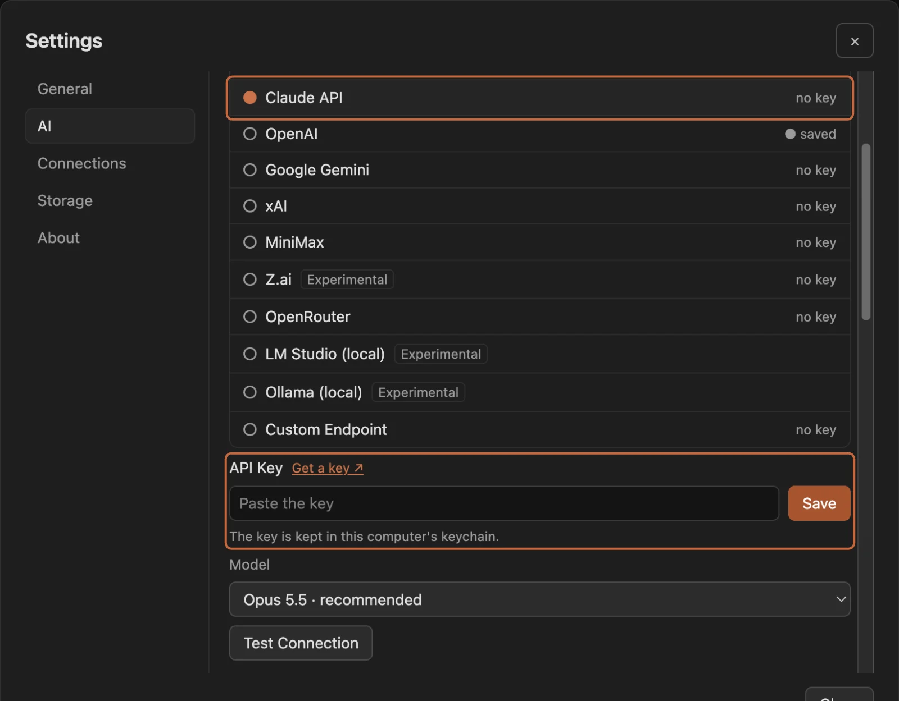

API keys
No Claude or ChatGPT subscription? An API key works too. You pay its provider for what you use, on your own account.

Add a key
- Pick the providerIn Settings › AI › AI Model, choose one: Claude API, OpenAI, Google Gemini, xAI, MiniMax, Z.ai, OpenRouter or Custom Endpoint. Each row says saved or no key.
- Get a keyGet a key opens the provider's page for it.
- Save itPaste it under API Key and press Save.
- Pick the model and testChoose the Model, then Test Connection. It sends one small request with a picture: Connected · read the picture means it works.
Only models that can read pictures are listed: animations, colour and B-roll need them. A provider marked Experimental has not passed Kilnframe's test set yet, and its scenes may come out simpler. With OpenRouter, only models that read images are listed, and OpenRouter takes 5.5% when credits are bought.
Custom Endpoint takes an Address (Base URL) and a Model Name, for any service that speaks the same API.
Where the key is kept
The key is kept in this computer's keychain: macOS Keychain, Windows Credential Manager or the Linux secret service. It is never sent to us. Change replaces it, Delete removes it from this computer.
Other keys, for sound
Further down the AI tab, three keys open more:
- Google Gemini (Narration and Music): story narration, dubbing voices and music with Google Lyria, whichever model writes the text.
- OpenAI (OpenAI (Transcript)): cloud transcription with OpenAI (Cloud transcription).
- ElevenLabs: Say Again in Voice…, sound effects from text, Eleven Music, ElevenLabs voices and cloud transcription. It needs a paid ElevenLabs plan. If you restrict the key, allow Text to Speech, Voices (Read and Write), Sound Effects and Music.
A key saved for the AI model is used here too, and the reverse.